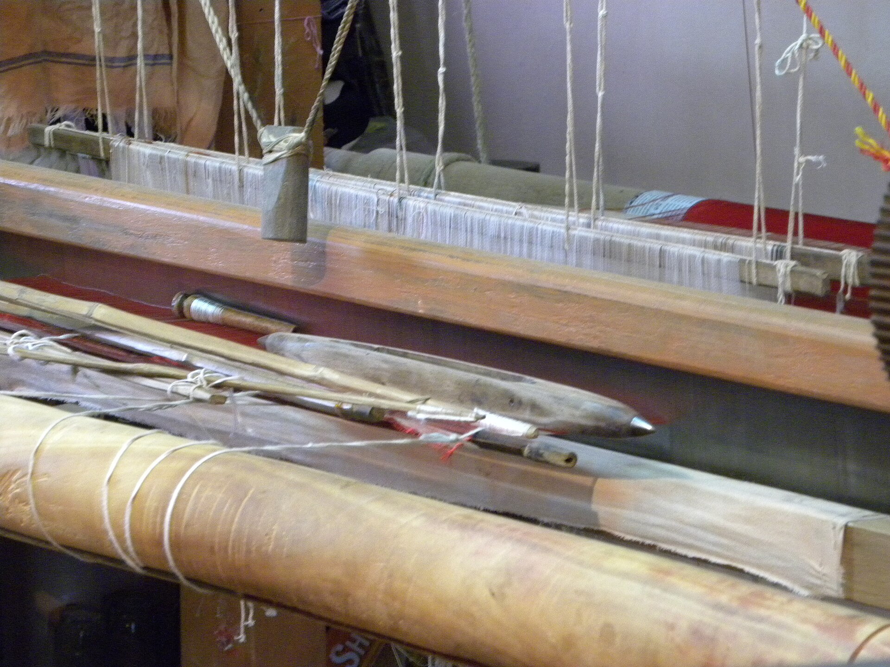
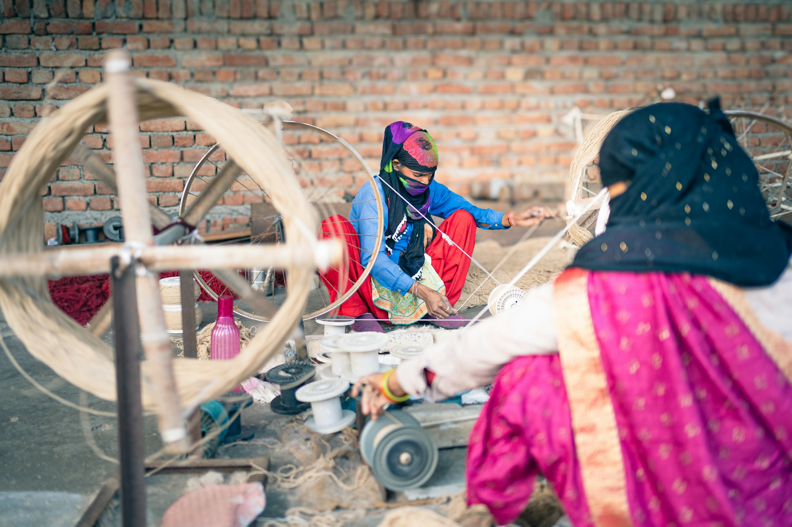

Hand-spun, hand-woven cashmere from Basohli, Jammu.
A week of one person’s life, in every piece.



The people behind KHADDI
The town lost this craft. We are trying to get it back.
Basohli, on the right bank of the Ravi, was once known for its pashmina. Then the looms stopped, and within three generations the skill lived only in the memory of old people. In 2016 three friends — an official who grew up here, a Supreme Court advocate and a designer — started the Discovering Roots Trust with their own money to put it back to work. Here are three promises from us:
- No power loom, ever. If demand outruns the looms, we train more hands.
- The maker is paid first. Rates are set before margin and published.
- Nothing hidden. Every piece names its spinner, weaver, village and date.

From the hub in Basohli
Nine days to spin. Six to weave.
A power loom does this in five minutes. Ours took fifteen days and four people, and every one of them is named on the piece.
Your name, in thread, in two scripts.
Any stole or shawl can be hand-embroidered with a name, initials, a date or a short line — Latin, Devanagari, or both.
Allow 10–18 days. Order by 25 November for delivery before Christmas. Personalised orders cannot be returned.
Design a Nāma piece
Tap the hem. Meet the person who made it.
Every piece carries a small NFC tag stitched into the hem, with a printed QR beside it. Hold a phone to it and a page opens. No app.
- The piece number, against this year’s total.
- Who spun it, who wove it, who embroidered it — and for how many days.
- The fibre, its micron count and the lab batch.
- Forty seconds of your piece on the loom.

- WovenBishan Dass · 6 days · loom no. 4
- EmbroideredRekha Devi
- FibreChangthangi, Ladakh · 13.2µ
- DyeUndyed
- Film40 seconds on the loom ▸
Watch it being madeThe Basohli Diaries
A town that had forgotten how to make its own cloth.
Hands that remember what books cannot teach.
One episode every two weeks, from the village. Nothing is sold on the channel.
 @discoveringrootsEP 01Dehairing by hand. No narration.
@discoveringrootsEP 01Dehairing by hand. No narration. @discoveringrootsEP 02Why your €40 pashmina is a lie@discoveringrootsEP 05Nine days to spin one shawl
@discoveringrootsEP 02Why your €40 pashmina is a lie@discoveringrootsEP 05Nine days to spin one shawl @discoveringrootsEP 06Six days on loom no. 4@discoveringrootsEP 08Embroidering a stranger’s name
@discoveringrootsEP 06Six days on loom no. 4@discoveringrootsEP 08Embroidering a stranger’s name @discoveringrootsEP 06Twelve women, one room
@discoveringrootsEP 06Twelve women, one room @discoveringrootsEP 11The first shawls leave for Europe
@discoveringrootsEP 11The first shawls leave for Europe @discoveringrootsEP 01The town that forgot its own cloth@discoveringrootsEP 01Dehairing by hand. No narration.@discoveringrootsEP 02Why your €40 pashmina is a lie@discoveringrootsEP 05Nine days to spin one shawl@discoveringrootsEP 06Six days on loom no. 4@discoveringrootsEP 08Embroidering a stranger’s name@discoveringrootsEP 06Twelve women, one room@discoveringrootsEP 11The first shawls leave for Europe@discoveringrootsEP 01The town that forgot its own cloth
@discoveringrootsEP 01The town that forgot its own cloth@discoveringrootsEP 01Dehairing by hand. No narration.@discoveringrootsEP 02Why your €40 pashmina is a lie@discoveringrootsEP 05Nine days to spin one shawl@discoveringrootsEP 06Six days on loom no. 4@discoveringrootsEP 08Embroidering a stranger’s name@discoveringrootsEP 06Twelve women, one room@discoveringrootsEP 11The first shawls leave for Europe@discoveringrootsEP 01The town that forgot its own cloth